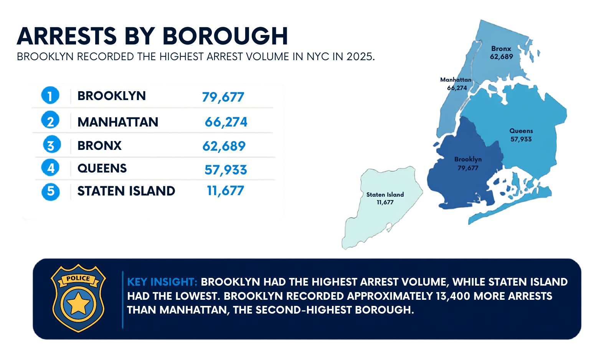
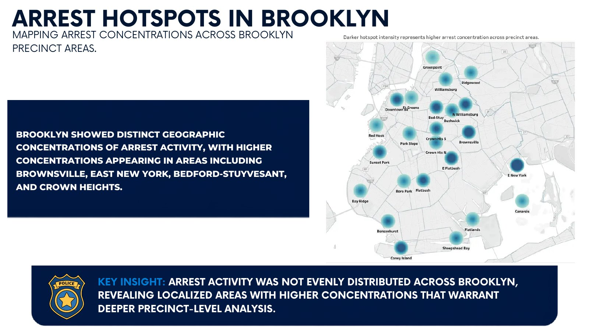
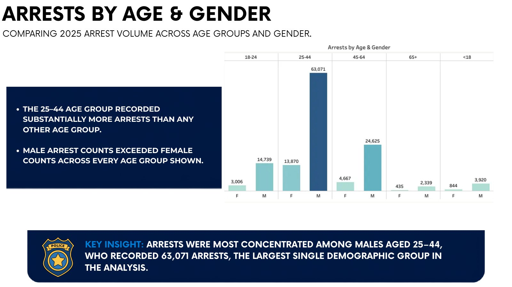
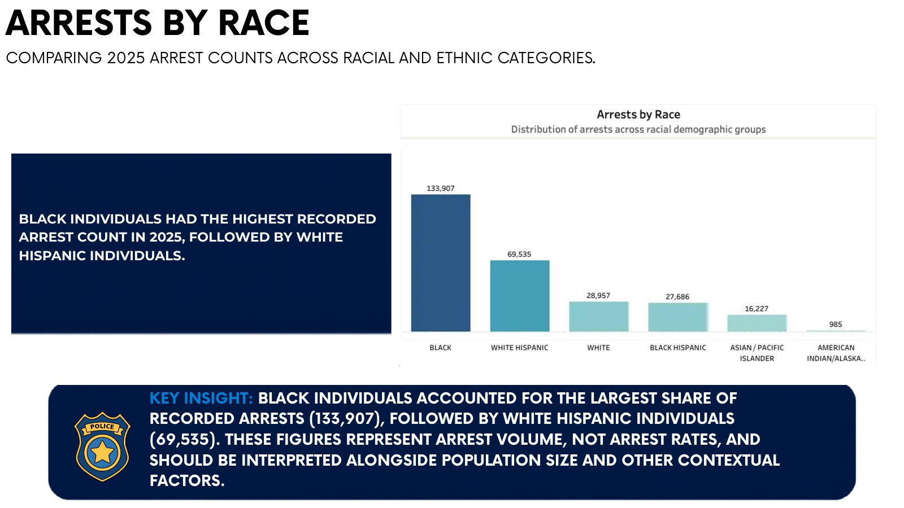
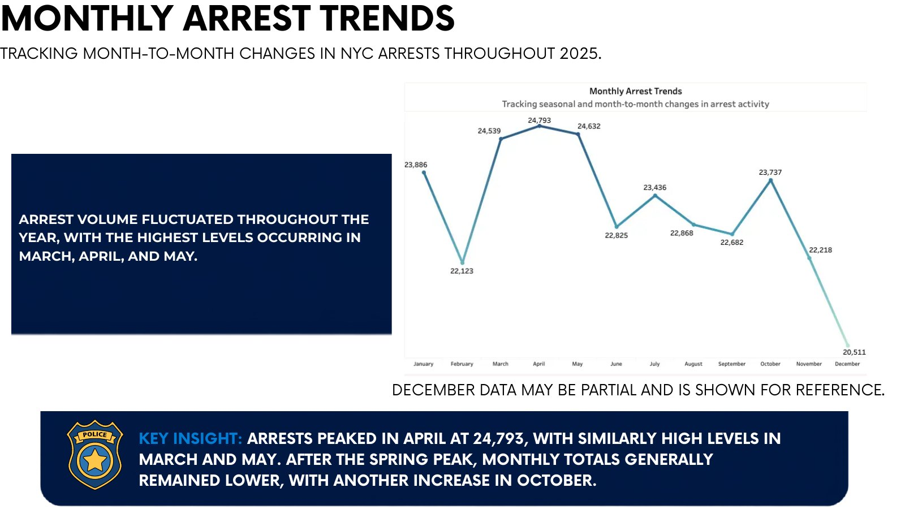
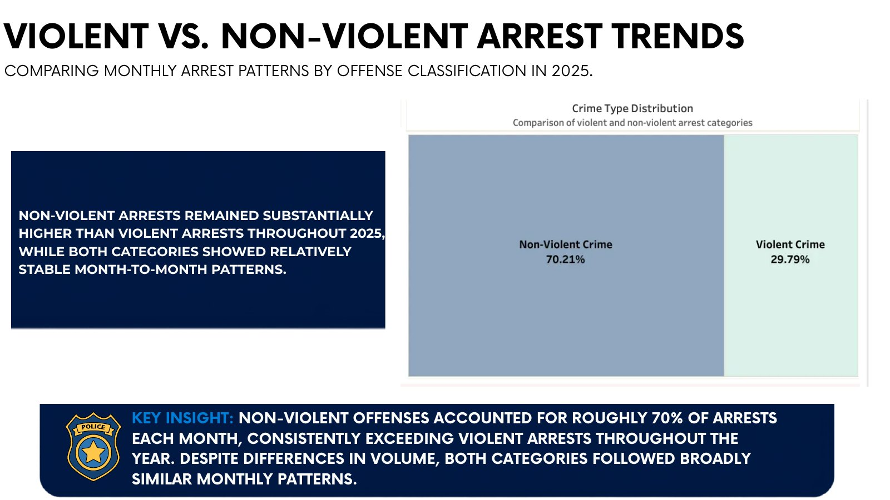
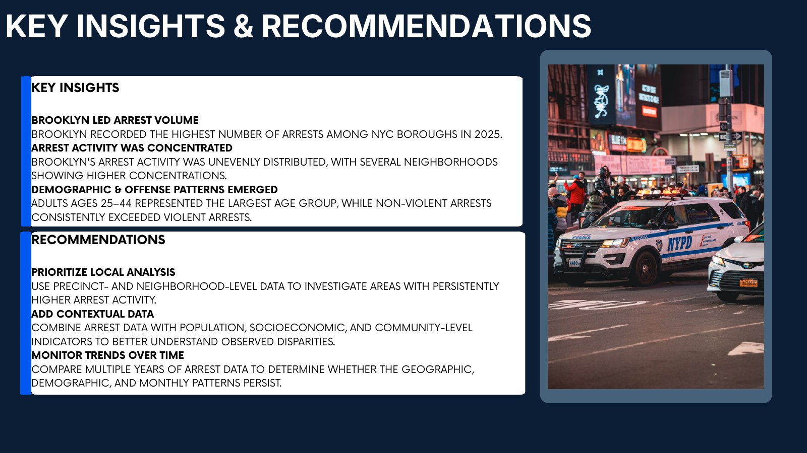

Prioritize local analysis
Use precinct- and neighborhood-level data to investigate areas with persistently higher arrest activity.
Public safety analytics · 2025
Exploring geographic, demographic, and monthly arrest patterns across New York City.
This analysis organizes 2025 NYC arrest volume into borough, neighborhood, demographic, offense, and monthly views. The goal is to make patterns easier to compare and turn them into clear next questions for public-sector stakeholders.
Counts describe recorded arrest volume. They are not arrest rates and should be interpreted alongside population and broader contextual factors.
02 · Geographic distribution
Brooklyn recorded the highest arrest volume in NYC in 2025.

03 · Neighborhood detail
Precinct-level patterns reveal that arrest activity is not evenly distributed.

04 · Demographic patterns
Comparing arrest counts across demographic categories helps identify where volume is concentrated.
Arrests among males ages 25–44
Recorded arrests among Black individuals
Non-violent offense share


These figures represent recorded arrest volume, not underlying population rates. Context such as population size and socioeconomic conditions is essential for responsible interpretation.
05 · Time and offense
Arrest activity peaked in April and remained predominantly non-violent throughout the year.


06 · From analysis to action
Use precinct- and neighborhood-level data to investigate areas with persistently higher arrest activity.
Combine arrest counts with population, socioeconomic, and community-level indicators to better understand observed differences.
Compare multiple years to determine whether geographic, demographic, and monthly patterns persist.

Project resources
Use the interactive dashboard to explore the visual analysis, or review the SQL workflow behind the project.